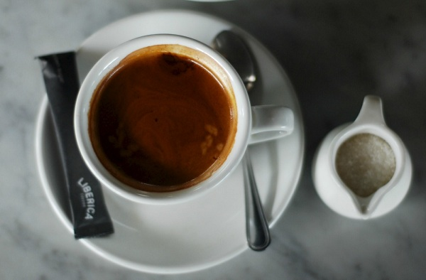

Americano
$19.91
Caffè Americano, hay Americano (tiếng Anh: American coffee – Cà phê Mỹ) là một phong cách cà phê chuẩn bị bằng cách thêm nước nóng vào espresso, điều này làm cà phê có độ đậm tương tự, nhưng hương vị lại khác, giống cà phê
phin. Độ đậm của một tách Americano thay đổi theo số lượng tách espresso và lượng nước bổ sung.

Cappuccino
$19.91
Được pha trong tách có thành dày để giữ nhiệt cho cà phê lâu hơn. Công thức cơ bản của một tách Cappuccino là: 01 phần cà phê espresso pha với một lượng nước gấp đôi, một phần sữa nóng và phần còn lại là bọt sữa. Để hoàn thiện
khẩu vị, người ta thường rắc lên trên tách Cappuccino một chút bộ cacao hoặc bột quế. Những người pha thậm chí còn khéo léo dùng khuôn hay thìa khuấy điệu nghệ trong lúc rắc bột để tạo thành các hình nghệ thuật.

Cà phê đen
$19.91
Cà phê đen là chiết xuất nước chỉ hay hạt cà phê hoặc bột cà phê có hoặc không có chất làm ngọt. Cà phê hạt hoặc bột cà phê được pha trong nước; lượng cà phê phụ thuộc vào bạn muốn độ nặng của cà phê. Cà phê được phục vụ nóng
và chất làm ngọt có thể được thêm vào nếu bạn thích (đường, sữa, trứng,...) nhưng cà phê truyền thống màu đen được cho là rất đắng, phù hợp với những người uống cà phê lâu năm.

Latte
$19.91
Cafe latte thực chất được làm chính từ espresso và sữa. Món này chứa 1/3 espresso, 1/3 sữa được làm nóng và 1/3 bọt sữa, nôm na vậy thôi chứ khi đổ vào trong một ly sứ cũng không ai nhìn ra được. Tùy thuộc vào kĩ năng của một
barista, mà bọt sữa có thể được đổ để tạo ra hình. Những hình ảnh xuất hiện ở ly latte thông thường là trái tim, roseta, hình là. Latte art là một chủ đề rất thú vị. Bạn có thể bước chân đến Starbucks để trải nghiệm loại
cà phê này một cách đúng điệu.

CÀ PHÊ THỔ NHĨ KÌ
$19.91
Cà phê Thổ Nhĩ kỳ, còn gọi là cà phê Ả rập đã có 700 đến 800 năm lịch sử. Người Thổ Nhĩ kỳ có một cách đun cà phê rất đặc biệt, trước tiên những hạt cà phê được rang xay thành bột rất mịn. Sau đó bột cà phê và nước được cho
vào bình đun bằng sắt, tiếp theo được đun trên nồi cát để làm sôi.

CAFE MOCHA
$19.91
Cafe Mocha còn có tên gọi mà ít ai biết tới đó là Mocaccino (đọc là: mô-ka-chi-nô) là một biết thể của Cafe Latte, cafe Ý. Cafe Mocha có nguồn gốc xuất sứ từ thành phố Bờ Biển Đỏ (Read Sea) Mocha, Yemen, nơi mà từ tận thế kỉ
15 đã từng nơi xuất khẩu cafe lớn nhất thế giới, đặc biệt là nguồn cung cấp cafe cho những vùng lân cận bán đảo Ả Rập. Cafe Mocha có mùi vị socola, và được tạo ra để nhái là hương vị tự nhiên đó. Giống như Cafe Latte, Cafe
Mocha được làm từ espresso và nữa nóng, nhưng được thêm mùi vị socola, thông thường được làm từ bột socola, nhưng ngày nay đa phần các biến thể được từ siro socola. Cafe Mocha bao gồm socola đen hay socola sữa.
Contact Us
sokunmaru@gmail.com